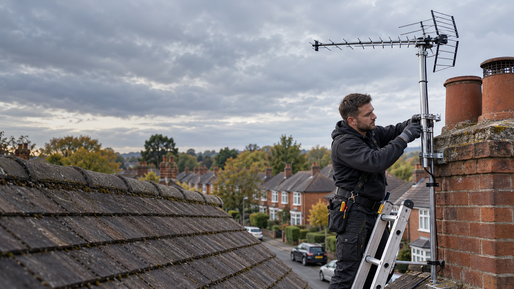

More than aerials
One business covers TV aerials, satellite dishes, radio aerials and television set-up.
FAMILY-RUN IN NOTTINGHAM SINCE 1961
Reliable TV aerial installations, satellite services and reception repairs from an established local family business.
Free quotes and advice. Call to discuss what you need.

SERVICES
From a new aerial to signal troubleshooting or help setting up a television, find the service you need.
Aerial installation and set-up for Freeview and YouView.
Service details → 02Dish installation, upgrades, set-up and fault finding.
Service details → 03Maintenance, fault diagnosis and repair for aerials and dishes.
Service details → 04Help investigating weak or interrupted TV signals.
Service details → 05Supply and fit an aerial to improve radio reception at home.
Service details → 06Television installation, wall mounting and equipment set-up.
Service details →ABOUT THE BUSINESS
Phil Chapman Aerial Services is a family-run Nottingham business with over 25 years of aerial installation experience. The work ranges from new installations to repairs and reception problems.
More about the business →WHY CONTACT PHIL
Talk through the issue, get advice and find out what the work may involve before you arrange a visit.
One business covers TV aerials, satellite dishes, radio aerials and television set-up.
Help is available when an existing aerial or dish stops giving the reception you expect.
The business says it aims to leave customers happy with the work and clear about how their equipment works.
PHOTOGRAPHS OF THE WORK
These spaces are ready for genuine photos supplied by Phil. No customer jobs are represented by the placeholders.
To add photos, see the image instructions in README.md.
FREE QUOTES & ADVICE
Call Phil to discuss an aerial, satellite or television installation and request a free quote.